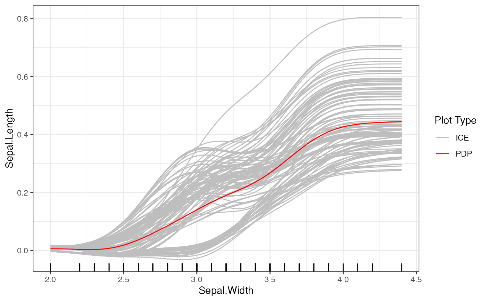
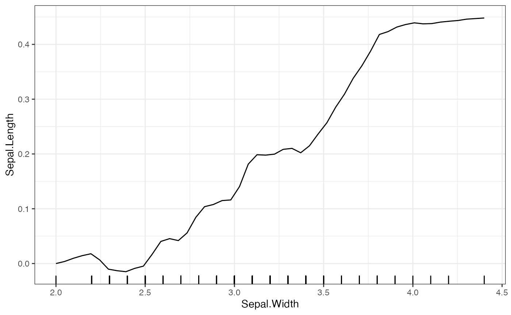
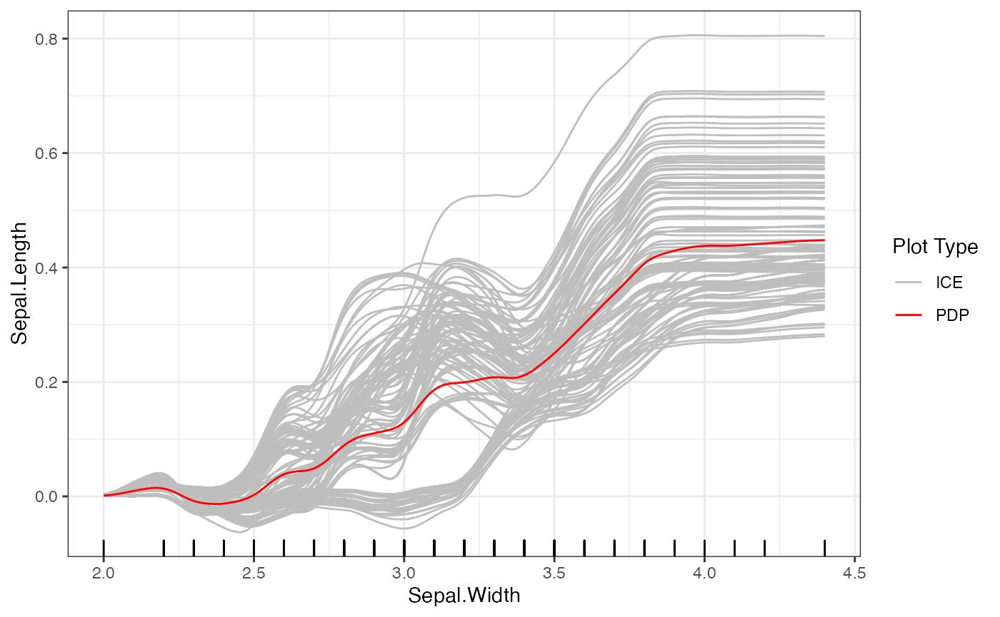
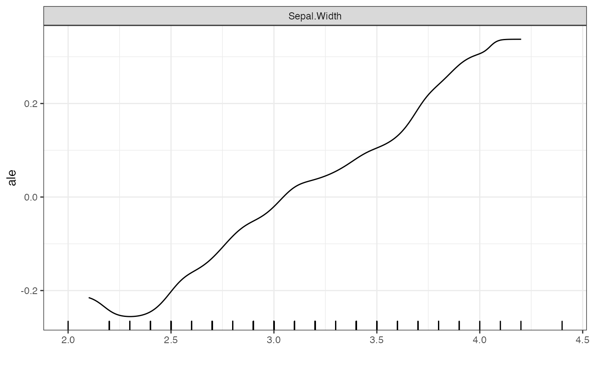

Background
The partial dependence function is defined as the expectation of the regression function predictions as the value of a single feature is marginally perturbed. For a feature \(S\) and regression function \(f\), we can write this as:
\[ PDP_S(x) := \mathbb{E}_{X}\left[f(X) \mid X_S = x\right] \] In practice we estimate the partial dependence function at a point \(x\) by taking a sample average over the predictions of the regression function on the training data set with the feature \(X_S\) set to the desired evaluation point \(x\).
\[ \hat{PDP}_{S}\left(x\right)=\frac{1}{n} \sum_{i=1}^{n} {f}\left(X_{i,X_s = x }\right) \] Where \(X_{i,X_s = x }\) is the \(i\)th training observation with feature \(S\) set to equal \(x\). If the training samples are drawn from an i.i.d. sample from the true distribution of \(X\), that we take expectation with respect to in the definition of the PDP, then the above estimate is unbiased for the true value of the PDP function of \(f\) for the \(S\)th feature evaluated at \(x\). Combining these estimates at many grid points, we can then plot the estimated PDP function as a function of \(x\).
Sometimes it may be beneficial to introduce some bias into the point wise estimates of the PDP function in order to improve the interpretability and stability of the entire PDP function. One option is to use kernel smoothing to smooth the estimated PDP function values. Given independent features \(x\), and outcomes \(y\), a kernel function \(K\) and a bandwidth \(h\), the Nadaraya–Watson kernel regression estimator is given by:
\[ \widehat{m}_{h}(x)=\frac{\sum_{i}^{n} K_{h}\left(x-x_{i}\right) y_{i}}{\sum_{i=1}^{n} K_{h}\left(x-x_{i}\right)} \] Once we have estimated the point wise values of the PDP function, we can apply this kernel regression to smooth the estimated function. The predictions of the smoothed PDP function are then given by: \[ \hat{PDP}_{S, smooth}\left(x\right) =\frac{\sum_{i \in X_{train}} K_{h}\left(x-x_{i}\right) \hat{PDP}_{S}\left(x_i\right) }{\sum_{i \in X_{train}} K_{h}\left(x-x_{i}\right)} \] We implement this method and allow the user to specify the desired kernel, \(K\), and bandwidth \(h\).
Curve Smoothing
To get smoothed plots of PDP, ICE, or ALE curves for continuous
features, we also have options to smooth the curves using the
stats:ksmooth package. This may be beneficial for users who
want well-behaved curves for plotting and distillation. To do so, we set
parameter smooth equal to TRUE when calling
the plot function, and can set the bandwidth, number of points to
interpolate, and the type of smoothing with the parameters
smooth.binsize, smooth.npoints, and
smooth.type respectively.
## Warning: package 'Rforestry' was built under R version 4.1.2
# Load in data
data("iris")
set.seed(491)
data <- iris
# Train a random forest on the data set
forest <- forestry(x=data[,-1],
y=data[,1])
# Create a predictor wrapper for the forest
forest_predictor <- Predictor$new(model = forest,
data=data,
y="Sepal.Length",
task = "regression")
# We specify grid.size for clarity (grid.size = 50 by default)
forest_interpreter <- Interpreter$new(forest_predictor)We can compare the smooth and standard PDP plots for the same model:
# Default smoothing options
plot(forest_interpreter,
method = "pdp",
features = c("Sepal.Width"),
smooth = T)## $Sepal.Width
## $Sepal.Width
For the bandwidth, the default is the maximum difference in the grid points for the given feature. The type of smoothing done is by default uses a Gaussian kernel, and the number of points is double the number of grid points. When setting the bandwidth and number of points, one should be careful about creating empty kernels. These result in NA values and prompt the user to put different values for these parameters.
We can also smooth ALE and ICE plots in the same way:
# Smooth ICE plots
plot(forest_interpreter,
features = c("Sepal.Width"),
smooth = T,
method = "pdp+ice",
smooth.binsize = .1,
smooth.npoints = 500)## $Sepal.Width
# Smooth ALE plots
plot(forest_interpreter,
features = c("Sepal.Width"),
smooth = T,
method = "ale",
smooth.binsize = .2,
smooth.npoints = 500)## $Sepal.Width
# Standard ALE plots
plot(forest_interpreter,
features = c("Sepal.Width"),
method = "ale",
smooth = F)## $Sepal.Width
For further details on these methods, please refer to the “References” tab, which contains documentation for each of the methods discussed.